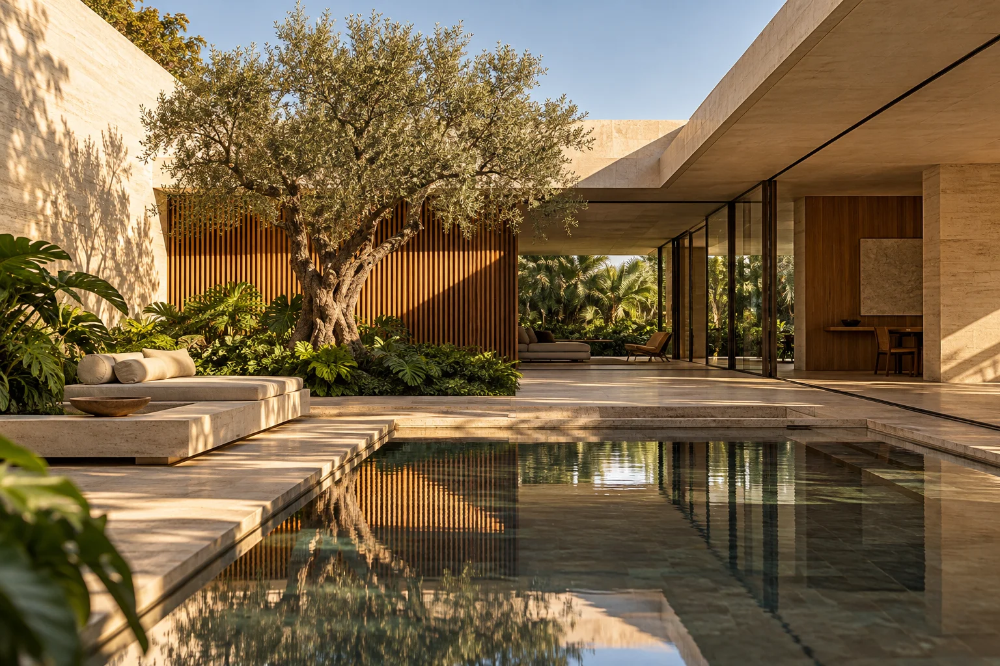

Casas com respiro
Áreas integradas, jardins e luz natural. Espaço para destacar fotos e diferenciais de cada imóvel.
Conceito por WunderHub Marca fictícia · demonstração visual

Uma curadoria de lugares para morar
Arquitetura, luz natural e escolhas que fazem sentido para o seu jeito de viver.
Explorar a seleçãoArquitetura
ContemporâneaAtmosfera
Luz & naturezaAmbientes
IntegradosSeleção
Conceito ilustrativoUma forma visual de apresentar imóveis e ajudar o visitante a entender o que procura.
Áreas integradas, jardins e luz natural. Espaço para destacar fotos e diferenciais de cada imóvel.
Ambientes funcionais e informação bem organizada para comparar possibilidades.
História do projeto, materiais e contexto valorizam o que torna cada espaço especial.
Este é um exemplo de direção visual. Seu projeto recebe conteúdo, identidade e funcionalidades próprios.
Cores, tipografia, fotos, textos e estrutura são definidos a partir da sua marca. A ideia é construir uma presença que represente o seu negócio.
Podemos conversar sobre catálogo, formulários, agendamento, integrações e conteúdo. O escopo e as ferramentas são definidos conforme a necessidade, antes do desenvolvimento.
Uma vitrine personalizada pode reunir catálogo, filtros de busca e contato para visitas. A imagem deste conceito é ilustrativa.